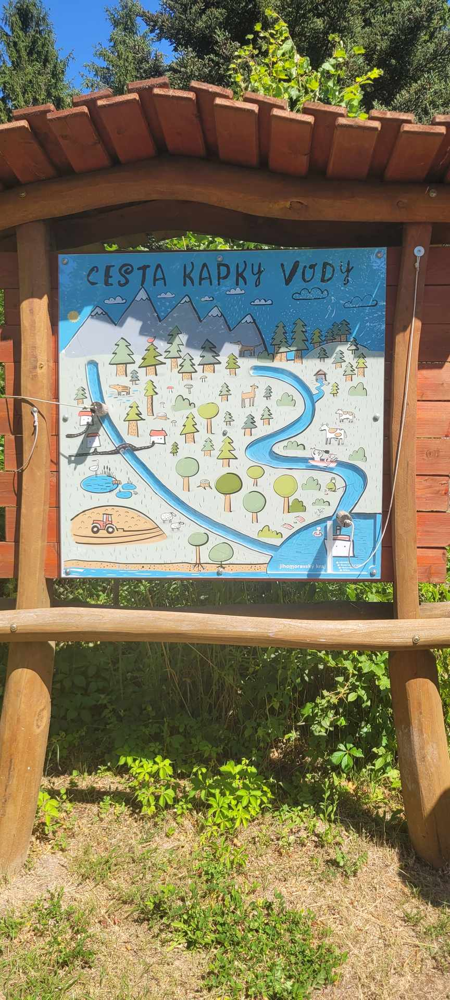

Projekt kombinuje koncepční nástroje s konkrétní obnovou čtyř lokalit – od revitalizace zanesených vodních nádrží po novou návštěvnickou a vzdělávací infrastrukturu. Každá oblast řeší jiný typ problému, dohromady ale tvoří ucelený model ochrany přírody spojený s řízeným turismem.

Zaječí potok
Revitalizace tří průtočných vodních nádrží, doplnění o pět nových tůní a sedimentační mokřad. Domov nejméně 7 druhů obojživelníků, včetně čolka horského a rosničky zelené.
- Realizace VIII/2026 – III/2028
- Realizuje KAVYL spol. s r.o., dozor Atregia s.r.o.
Obora Sokolnice
Nová neprůtočná oborní nádrž a dvě tůně s přírodě blízkým charakterem na místě intenzivně obhospodařovaných luk. Lokalita zůstává bez přímého přístupu veřejnosti.
- Realizace VIII/2026 – III/2028
- Realizuje KAVYL spol. s r.o., dozor Atregia s.r.o.

Arboretum Křtiny
Naučné panely o vrbách a biodiverzitě, rekonstrukce oplocení, nové pěšiny a vzdělávací zóna Vrbiště bludiště. Slaví 100 let od založení arboreta.
- Realizace 2026 – 2028
- Realizuje KAVYL spol. s r.o. a Mendelova univerzita

Lesní pedagogika Doubravka
Obnova retenční nádrže na výukový vodní biotop s Archimédovým šroubem a edukativní tabulí „Cesta kapky vody" – alternativní cíl mimo přetížené trasy.
- Realizace IX/2026 – VI/2027
- Projekt Atregia s.r.o., realizace KAVYL spol. s r.o.